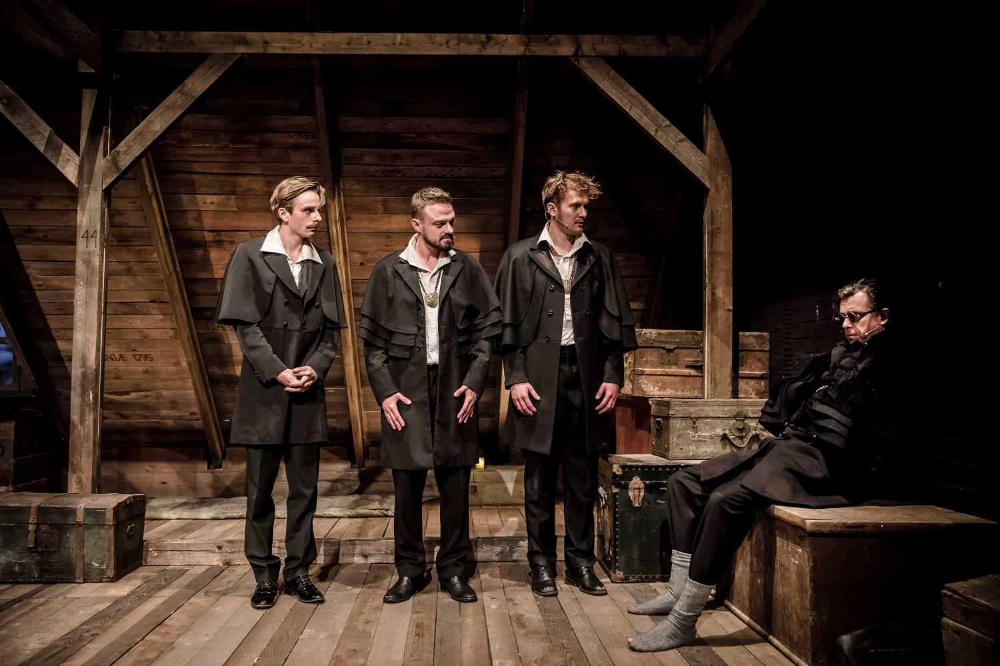
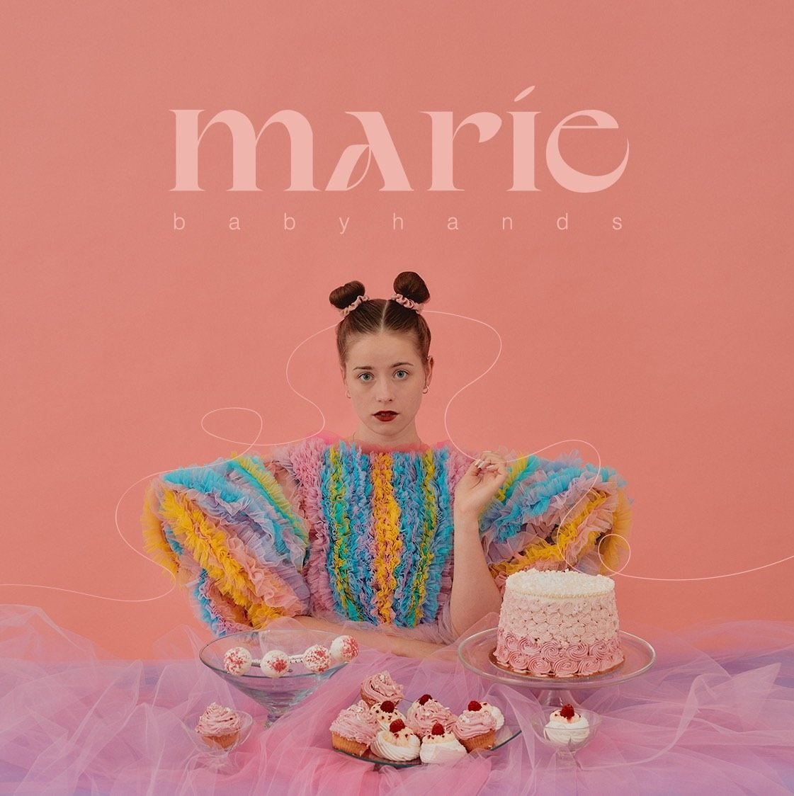
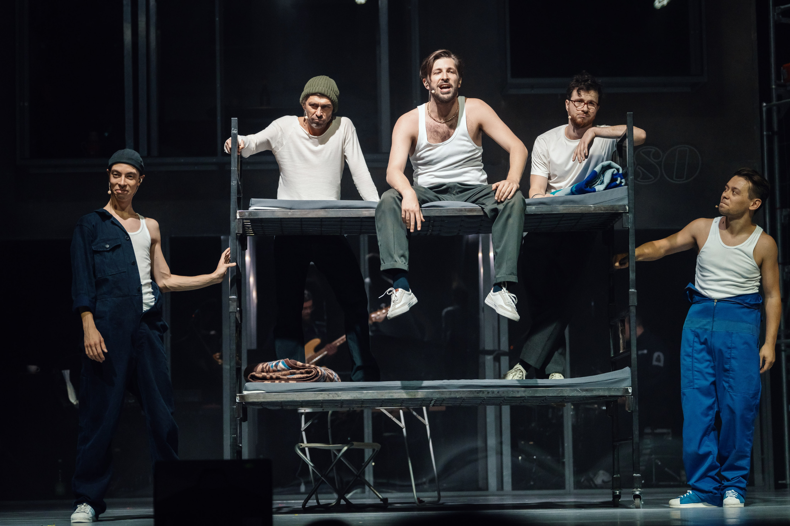
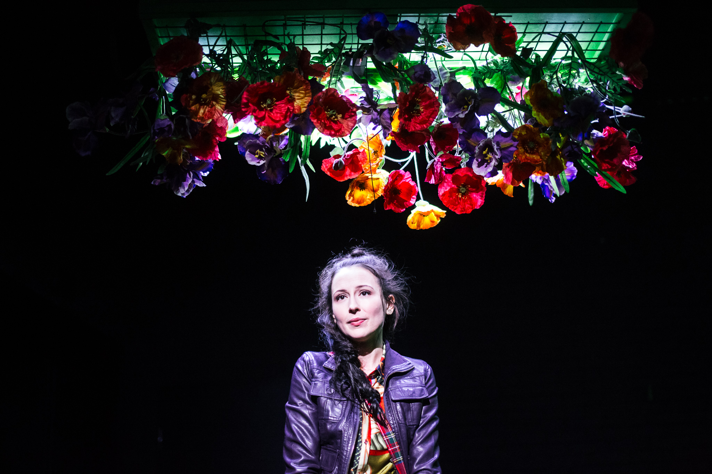
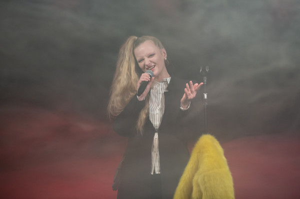
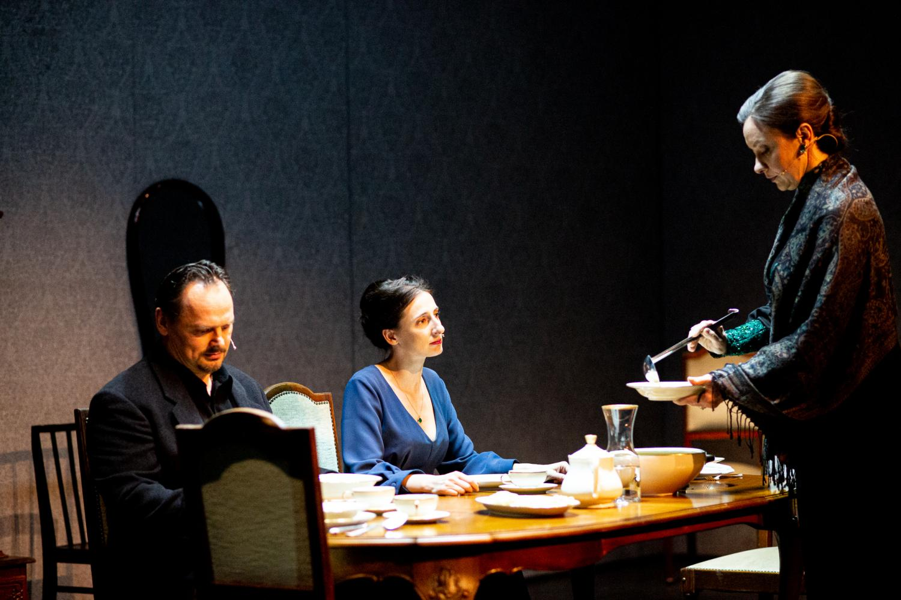
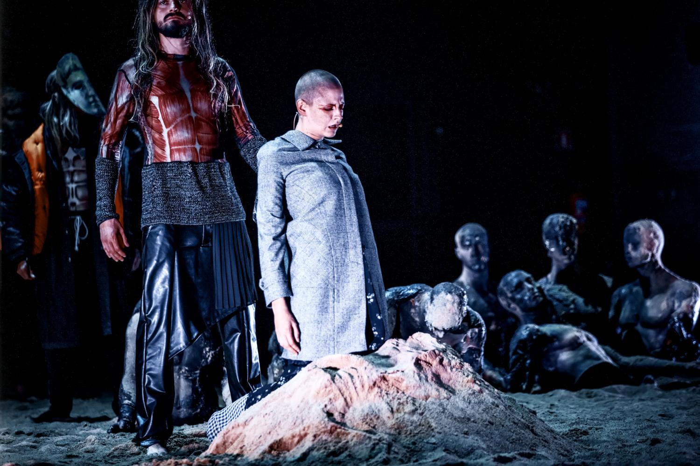
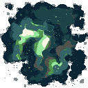

Październik 14, 2022
Koło Sprawy Bożej
Teatr Wybrzeże(Stara Apteka)
Reżyseria: Radek Stępień
Dramaturgia: Konrad Hetel
Premiera: 14 Października 2022 | Teatr Wybrzeże(Stara Apteka)
Październik 25, 2022
Dziady
Teatr Szekspirowski
Reżyseria: Maja Kleczewska
Dramaturgia: Łukasz Chotkowski
Premiera: 19 Października 2021 | Teatr im. Juliusza Słowackiego

Październik 31, 2022
Babyhands
Klub Muzyczny Parlament
Autorka: Marie
Premiera: 24 Września 2022 | Akademia CLUB

Listopad 24, 2022
1989
Teatr Szekspirowski w w koprodkucji z teatrem imienia Juliusza Słowackiego w Krakowie.
Reżyseria: Katarzyna Szyngiera
Muzyka: Andrzej Mikosz Webber
Premiera: 19 Listopada 2022 | Teatr Szekspirowski

Listopad 25, 2022
Więzi
Teatr Wybrzeże(Stara Apteka)
Reżyseria: Olena Apczel
Dramaturgia: Jarosław Murawski
Premiera: 6 Stycznia 2019 | Teatr Wybrzeże(Stara Apteka)

Styczeń 9, 2023
Supernova Live
Teatr w Blokowisku
Autorka: Sandra Szwarc
Reżyseria: Tomasz Kaczorowski
Premiera: 19 Grudnia 2022 | Teatr w Blokowisku

Styczeń 14, 2023
Śmierć Ivana Ilijicza
Teatr Wybrzeże(Stara Apteka)
Reżyseria: Franciszek Szumiński
Dramaturgia: Małgorzata Jakubowska
Premiera: 22 lutego 2020 | Teatr Wybrzeże(Stara Apteka)

Styczeń 20, 2023
Trojanki
Teatr Szekspirowski
Reżyseria: Jan Klata
Przekład: Jerzy Łanowski
Premiera: 8 Września 2018 | Teatr Wybrzeże(Duża Scena)

Drugi Semestr
Aktualnie czytasz dzienniczek z pierwszego semestru. Naciśnij, żeby przejść do drugiego.